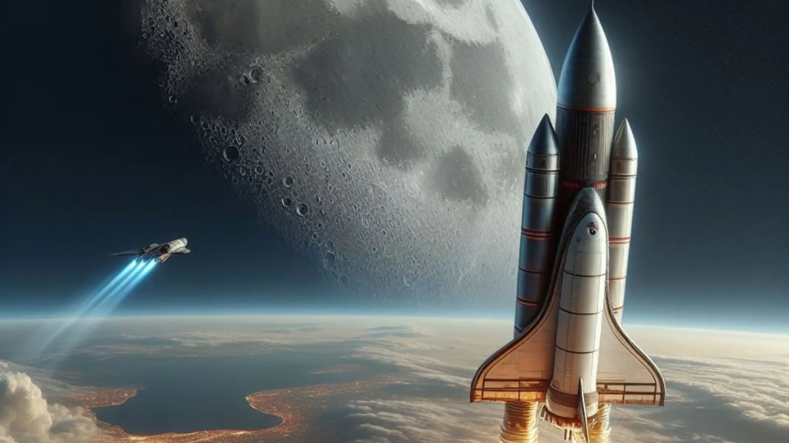

Viajes Espaciales
Desde el primer vuelo de Yuri Gagarin en 1961, la humanidad ha soñado con llegar a las estrellas.
Los viajes espaciales consisten en enviar naves, satélites o astronautas fuera del planeta Tierra. Gracias a ellos hemos explorado la Luna, Marte y más allá.

¿Qué se ha logrado?
En 1961, Yuri Gagarin fue el primer humano en viajar al espacio.
En 1969, Neil Armstrong pisó la Luna por primera vez.
Actualmente hay astronautas viviendo en la Estación Espacial Internacional (ISS).
Se han enviado sondas a Marte, Júpiter, Saturno y hasta fuera del sistema solar.
Misiones actuales y futuras
Las agencias NASA, ESA y SpaceX trabajan en misiones a la Luna y Marte.
Se están desarrollando cohetes reutilizables para hacer los viajes más baratos.
Se planea llevar humanos a Marte en las próximas décadas.
En este video explico brevemente por qué elegí este tema para mi proyecto:
Volver al inicio